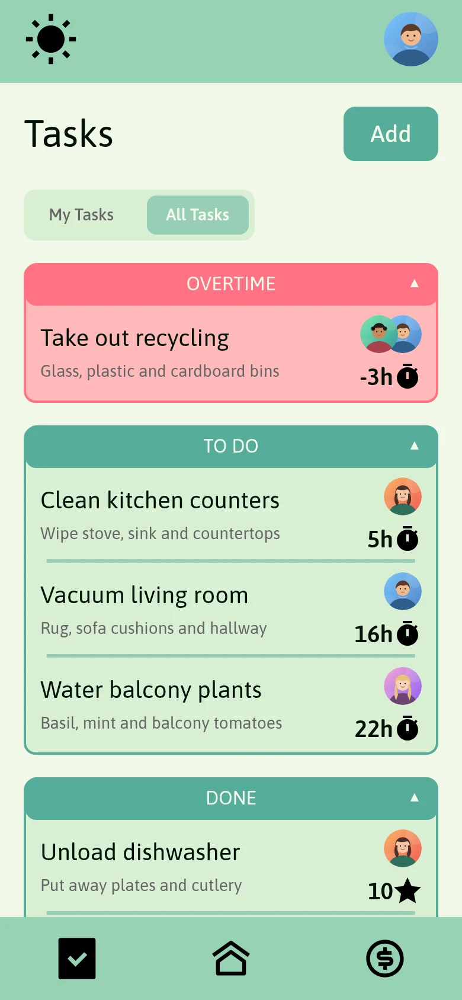

Chores & deadlines
Name it, describe it, set a deadline and cap the assignees. Live countdowns turn red the moment a task goes overdue.
Self-Hosted Household Management
Choruko is a self-hosted app for shared chores, points and expenses. It runs on your home network over plain HTTP, pushes real notifications through ntfy, and never asks for a cloud account.

Everything a shared flat needs
Choruko covers the whole loop: define the chore, share the load, keep score and settle up — without turning your home into a group chat spreadsheet.
Name it, describe it, set a deadline and cap the assignees. Live countdowns turn red the moment a task goes overdue.
Reusable chore templates carry a point value — Clean the kitchen, 20 points. Every new household starts with five defaults.
Monthly, yearly and all-time rankings for every roommate. Period counters roll over automatically; all-time glory stays.
Split a shared expense evenly, then track per-person paid and unpaid status in the household's own currency.
Each user gets a private topic. New tasks, 24-hour deadline reminders, invitations and settlements land in the ntfy app.
No mandatory TLS certificate, no domain name, no reverse proxy on a trusted home network. Add HTTPS only when you expose it.
A signed native Android shell ships with every release. On iOS, Add to Home Screen gives a full-screen web clip.
Household Admin and Participant roles, email invitations, admin hand-off, and a CLI password reset when SMTP is off.
Real app, real data
Captured from the running app. Flip the theme and the whole gallery follows.
Overdue work glows red; everything else counts down to its deadline.
Four roommates, three time ranges, one friendly rivalry.
Amounts due and paid, split per person in your own currency.
Rename, switch currency, invite people and delegate admin.
Account settings plus the private notification topic — copy once, done.
Comparison & architecture
Most household apps assume a vendor cloud. Most self-hosted PWAs assume a domain and a certificate. Choruko assumes neither — and still sends push notifications to every phone.
| Criterion | Choruko LAN HTTP + ntfy + APK | Typical self-hosted PWA | Commercial cloud apps |
|---|---|---|---|
| Home LAN setup | Plain HTTP out of the box — no domain, no certificate, no reverse proxy. | HTTPS is mandatory for Service Worker and Web Push; needs a domain or a custom CA. | Vendor account and a working internet connection required. |
| Push notifications | ntfy app: open, self-hostable, zero Google or Apple developer keys. | WebPush + VAPID tied to browser support, TLS and browser vendors. | Vendor cloud push (FCM/APNs) through their servers. |
| Mobile installation | Signed Android APK from GitHub Releases + iOS Home Screen web clip. | Browser-dependent PWA criteria; iOS installs are limited. | App Store account, subscriptions and review process. |
| Updates & maintenance | Server-driven UI: update Docker images, the APK keeps working. | Service Worker cache invalidation quirks after every deploy. | Vendor-controlled release schedule. |
| Privacy & data ownership | 100% local PostgreSQL 17; AGPL-3.0 source you can audit. | 100% local data, but push traffic still passes through a vendor. | Data lives on third-party servers. |
Under the hood
:2467
React 19 SPA + /api proxy
60-second quick start
Docker with the Compose plugin is the only requirement. Pull the files, set one password, start the stack.
# 1. download the deployment files
mkdir choruko && cd choruko
BASE=https://raw.githubusercontent.com/psampir/choruko/refs/heads/main
curl -fsSLO \
"$BASE/docker/compose/prod/docker-compose.yml"
curl -fsSL -o .env \
"$BASE/docker/compose/example.env"
# 2. edit .env and change DB_PASSWORD
# 3. start everything
docker compose up -dThen open http://localhost:2467 — or http://<server-ip>:2467 from your phone.
.env values| Variable | What it does | Default |
|---|---|---|
CHORUKO_PORT | Host port for the web UI | 2467 |
DB_PASSWORD | PostgreSQL password — change it | postgres |
NOTIFIER | Set to ntfy to enable push alerts | none |
NTFY_BASE_URL | ntfy server URL (self-hosted or https://ntfy.sh) | — |
PUBLIC_APP_URL | Public URL used in notification links | — |
ENABLE_EMAILS | SMTP password-reset emails | false |
Leaving email off is fine: reset a password from the manager container with docker exec -it choruko_mgr reset-password.
FAQ
Short answers. The documentation has the long ones.
No. Choruko is designed for a trusted home network, so plain HTTP on port 2467 is enough. There is no Service Worker and no Web Push — the two things that force HTTPS in a PWA. Add a reverse proxy with a certificate only if the instance is reachable from outside your LAN.
Every user gets a private ntfy topic, shown in Manage Account → Notifications. The backend publishes messages to your ntfy server, and the ntfy app on each phone subscribes to that topic. ntfy is open source, can be self-hosted, and needs no Firebase, APNs or developer keys.
Android: download the signed APK from GitHub Releases, allow installs from your browser, then enter the server address on first launch. iOS: open Choruko in Safari, tap Share → Add to Home Screen, and it runs as a full-screen web clip.
No. The APK is a thin native shell around the web UI: update the Docker images and it picks up the new frontend and API on its own. Rebuild the APK only when you want a new launcher icon or a change to the shell itself.
Run the interactive reset in the manager container:
docker exec -it choruko_mgr reset-passwordIt asks for the user's email and prints a new password. No mail server involved.
Monthly and yearly point counters reset automatically on the calendar boundary; all-time points are never reset. A background service sends a reminder through ntfy 23–24 hours before a deadline, then an overdue alert shortly after it passes.
One compose file. No accounts, no subscriptions, no cloud.